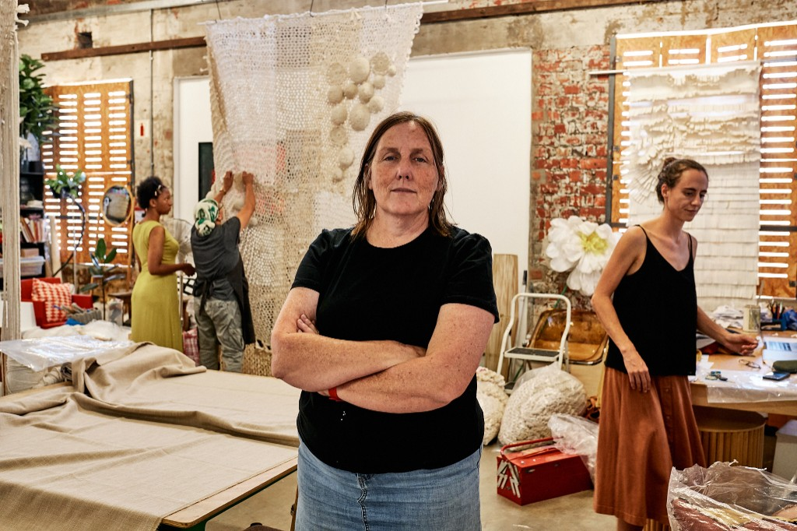

Vivienne Barratt
Vivienne is the founder and heart-beat of Yellow-Thread.
She has extensive experience at coming up with creative solutions and has the sourcing and production knowhow needed to bring concepts to life.
The team
We have a core team of skilled craftspeople capable producing a wide range of custom design elements for shoots, events, displays or whatever your project requires.
By drawing on our network of part time assistants we have the capacity to temporarily up-staff for large scale rollouts of retail concepts.
The Studio
Our studio is centrally situated in Woodstock Cape Town, it’s a great place to feel inspired and get stuck into making things and bringing ideas to life.